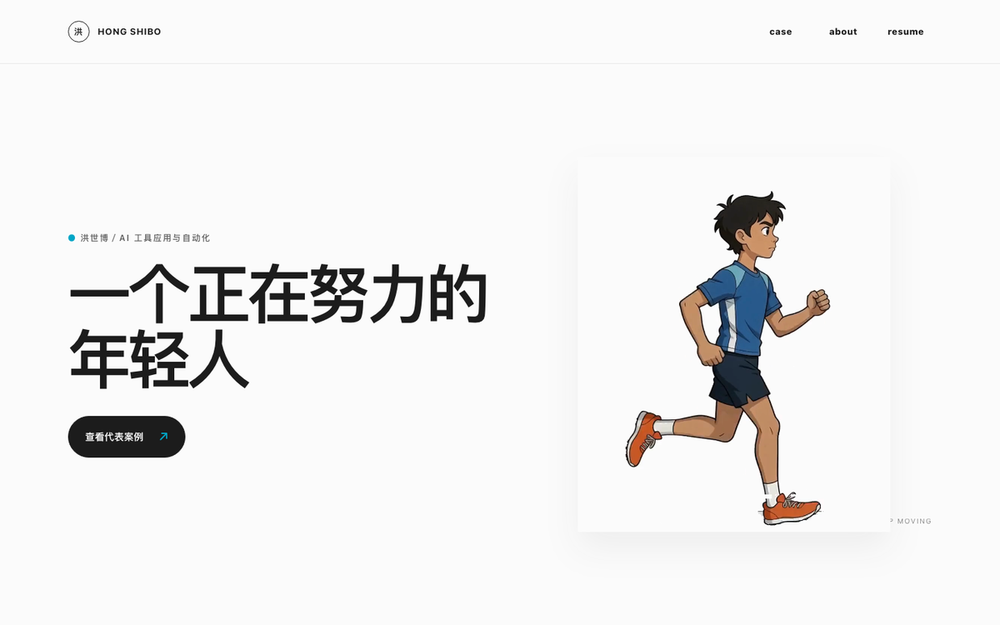

ORIGINAL LINE ART / KEEP MOVING
SELECTED CASE / 01—03
从真实任务，
看我的工作方式。
不只展示工具名称，更关注如何拆解、交付与核对。
MORE WORK / IN PROGRESS
更多作品，
正在整理。
这里会持续收录新的设计、开发与小实验。
悬浮卡片，先看看接下来会出现什么。

WEB / INTERACTION
网页与交互
从版式、动效到响应式页面，记录把想法变成可用网页的过程。
作品整理中 · 敬请期待
TOOLS / AUTOMATION
效率工具
把重复任务拆解成自动流程，让工具真正节省时间、减少出错。
作品整理中 · 敬请期待
CODE / EXPERIMENT
开发与小实验
收录代码、软硬件协同和交互原型，保留每次尝试与迭代。
作品整理中 · 敬请期待